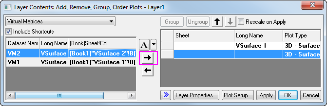

Sich schneidende Oberflächendiagramme aus Arbeitsblättern
erstellen
3D-Surface-Intersect-VM
Zusammenfassung
Viele Diagrammtypen wie 3D-Oberflächendiagramme, 3D-Balkendiagramme
und Konturdiagramme können aus Daten erstellt werden, die sich in einem
Matrixobjekt befinden, oder aus Daten, die in einem Block von Zellen in
einem Arbeitsblatt angeordnet sind. Diese letzte Anordnung wird als virtuelle
Matrix bezeichnet. Während ein herkömmliches Matrixobjekt nur die
lineare Abbildung von X- und Y-Koordinaten unterstützt, unterstützt eine
virtuelle Matrix auch die nichtlineare Abbildung. In diesem Kapitel wird
erläutert, wie Sie sich schneidende Oberflächendiagramme mit Farbabbildung
aus virtuellen Matrixdaten erstellen.
Origin-Version mind. erforderlich: Origin 2015 SR0
Was Sie lernen
werden
Dieses Tutorial zeigt Ihnen, wie Sie:
- ein Oberflächendiagramm mit Farbabbildung mit Hilfe von virtuellen
Matrixdaten aus einem Arbeitsblatt erstellen,
- ein Oberflächendiagramm zu einem anderen hinzuzufügen, um sich
schneidende Oberflächendiagramme zu erstellen,
- Transparenz festlegen.
Schritte
Oberflächendiagramme
aus virtuellen Matrixdaten erstellen
In diesem Abschnitt wird erläutert, wie Sie Oberflächendiagramme aus
Daten in einem Arbeitsblatt erstellen.
- Öffnen Sie ein neues Projekt.
- Klicken Sie auf die Schaltfläche Mehrfachimport ASCII
 auf der Symbolleiste Standard.
auf der Symbolleiste Standard.
- Navigieren Sie in dem aufgerufenen Dialog zu dem Verzeichnis \Samples\Graphing
und wählen Sie die beiden Dateien VSurface 1.dat und VSurface
2.dat, indem Sie die Strg-Taste gedrückt halten und auf Hinzufügen
klicken.
- Aktivieren Sie das Kontrollkästchen Optionendialog zeigen.
- Klicken Sie auf OK.
- Modifizieren Sie im Dialog impASC die Einstellungen gemäß
dem folgenden Bild, so dass die zwei Datendateien als zwei Arbeitsblätter
mit den Namen VSurface1 und VSurface2 in eine Arbeitsmappe
importiert werden:
- Klicken Sie auf OK, um diese zwei Datendateien zu importieren.
Die Daten haben X-Koordinatenwerte in der oberen Zeile und Y-Koordinatenwerte
in der ersten Spalte. Beachten Sie, dass die X-Koordinaten nichtlineare
Abstände haben.
- Fahren Sie bei aktivem Blatt "VSurface 1" mit dem Cursor
über die Zelle oben links im Arbeitsblatt, bis ein schräger schwarzer
Pfeil angezeigt wird, und klicken Sie, um das gesamte Blatt zu markieren.
.
- Wählen Sie dann im Menü Zeichnen: 3D: 3D Farbabbildung,
um den Dialog plotvm zu öffnen.
- Hinweis:
Dieser Dialog wird jedes Mal geöffnet, wenn ein Menüelement der 3D- oder
Konturdiagramme mit einer Gruppe von Arbeitsblattzellen aufgerufen wird.
In diesem Dialog können Sie definieren, wo die X- und Y-Koordinatenwerte
sich befinden.
- Passen Sie in dem Dialog die Einstellungen so an, wie auf dem folgenden
Bild zu sehen.
- Klicken Sie auf OK, um ein Oberflächendiagramm mit Farbabbildung
und eine virtuelle Matrix zu erzeugen.

- Wiederholen Sie den letzten Schritt, um ein weiteres Oberflächendiagramm
mit Farbabbildung zu zeichnen, indem Sie die Daten aus dem Arbeitsblatt
VSurface 2 verwenden. Dieses Mal wird VSurface 2 automatisch als
Z-Titel im Dialog plotvm verwendet.

Ein
weiteres Oberflächendiagramm zu einem Layer hinzufügen
In diesem Abschnitt wird erläutert, wie Sie ein Oberflächendiagramm
zu einem Diagrammlayer hinzufügen, der bereits ein anderes Oberflächendiagramm
enthält.
- Aktivieren Sie Graph1, klicken Sie mit der rechten Maustaste auf
das Symbol von Layer 1 in der oberen linken Ecke des Diagramms und wählen Sie Inhalt
Layer im Kontextmenü.
- Wählen Sie in dem aufgerufenen Dialog Layerinhalt im linken
Bedienfeld unter Verfügbare Daten VSurface2 aus und fügen Sie es
in das Feld Layerinhalt auf der rechten Seite ein. Verwenden Sie dazu
den nach rechts weisenden Pfeil in der Mitte des Dialogs (der Pfeil darunter
kann verwendet werden, um ausgewählte Elemente von Layerinhalt in Verfügbare
Daten zu schieben).

- Klicken Sie auf OK, um die zweite Oberfläche hinzuzufügen.
Das Diagramm sieht nun folgendermaßen aus:

Beachten Sie, dass zwei Oberflächen mit einem richtigen Schnitt angezeigt
werden.
Oberflächentransparenz
festlegen
Jetzt wird die Transparenz der zweiten Oberfläche festgelegt, so dass
Teile der ersten Oberfläche in diesem Schnittdiagramm sichtbar sind.
- Klicken Sie doppelt auf das zweite Oberflächendiagramm mit Farbabbildung,
um den Dialog Details Zeichnung zu öffnen.
- Wechseln Sie zur Registerkarte Oberfläche und bewegen Sie
den Schieber der Transparenz auf 40%. Klicken Sie dann auf Übernehmen
und OK.
Das fertiggestellte Diagramm sollte nun so angezeigt werden, wie unten
zu sehen: